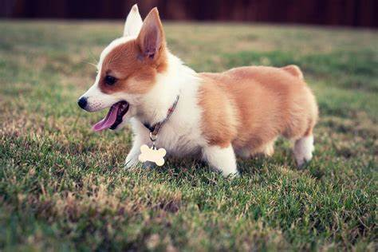

tag 종류에 대해 배워보자!!
제목2
제목3
제목4
제목5
제목6
여기는 본문태그 입니다!
여기는 본문태그 입니다!
오늘의 할 일
아이스카페라떼 레시피
- 우유 180ml 컵에 넣기
- 얼음을 가득 넣기
- 에스프레소 샷을 넣어주면
- 완성!
맛있게 드세요!
내가 좋아하는 음식
img & a tag



Naver로 이동하기(default)
Naver로 이동하기(target_blank)
Google로 이동하기(target_title)
html_start(default)